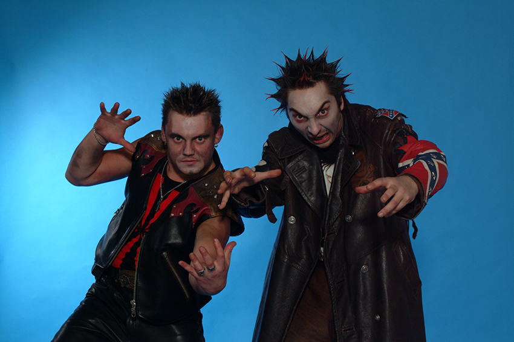

Главная | Общая информация | История | Фильмография | Дискография | Источники | Контакты | МЕРЧ
Об этой группе написано столько, что вряд ли нам удалось бы добавить что-либо новое. На нашем сайте
вы найдете историю создания группы, биографии участников, дискографию и фильмографию группы.
Мы предлагаем вашему вниманию только достоверную информацию.
Это учебный сайт демонстрационного содержания . Его цель - отработка технологии разметки
гипертекстовых документов с помощью языка HTML. Более полную информацию о группе Король и Шут
вы найдете на других сайтах. Приносим свои извинения.
|  |
© Все права защищены. В.В. Филатова, ММО111-3, 4 курс, 2024г.